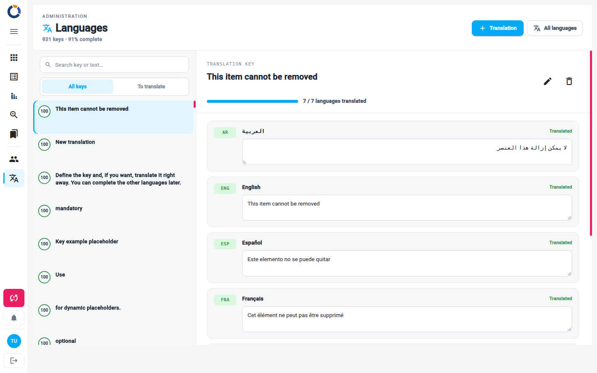

Gerir Idiomas
A página Idiomas permite aos administradores gerir todo o texto traduzido utilizado no Dino. Cada texto tem uma Chave de tradução — habitualmente o próprio texto em inglês — e um valor para cada idioma disponível. A partir daqui pode encontrar uma chave, traduzi-la, adicionar novas chaves e importar ou exportar todo o dicionário de um idioma.

O cabeçalho da página apresenta um resumo da cobertura das traduções: o número total de Chave de tradução e a percentagem concluída. Abaixo do cabeçalho, a página está dividida em duas áreas — a lista de Chave de tradução à esquerda e o detalhe da chave selecionada à direita.
Apenas para administradores
Esta área só é visível para utilizadores com a função de Administrador. Se não a vê na navegação, contacte o administrador do sistema.
Explorar as Chave de tradução
Cada linha da lista mostra uma chave e, num anel à sua esquerda, a percentagem de idiomas que já a traduzem. Se o texto contiver marcadores dinâmicos, como {{language}}, estes são apresentados sob a chave.
Pesquisar e filtrar a lista
- Escreva no campo Pesquisar chave ou texto… para encontrar uma chave. A pesquisa procura tanto nas chaves como nas suas traduções.
- Utilize os dois botões junto ao campo de pesquisa para escolher o que é apresentado:
- Todas — todas as Chave de tradução.
- Por traduzir — apenas as chaves que ainda faltam em pelo menos um idioma.
A pesquisa e o filtro funcionam em conjunto: com Por traduzir selecionado, a pesquisa procura apenas entre as chaves ainda por traduzir.
Traduzir uma chave
- Clique numa chave da lista. O seu detalhe abre à direita.
- O detalhe mostra um cartão por idioma, marcado como Traduzido ou Em falta, com uma caixa de texto que contém o seu valor.
- Escreva a tradução na caixa de cada idioma que pretende completar.
Não existe botão de guardar: cada alteração é guardada automaticamente um momento depois de parar de escrever. O cabeçalho do detalhe mostra A guardar… enquanto está a ser guardado e Guardado quando termina; se algo correr mal, mostra Falha ao guardar. Uma barra de progresso ao lado indica quantos idiomas traduzem a chave.
Marcadores
Mantenha os marcadores da chave, como {{language}}, inalterados em todas as traduções: o Dino substitui-os pelo valor real quando apresenta o texto. Estão destacados na chave apresentada no topo do detalhe.
Renomear ou remover uma chave
No topo do detalhe, junto à chave:
- Renomear chave (ícone de lápis) — transforma a chave num campo editável. Escreva a nova chave e prima Enter, ou clique fora do campo, para a aplicar; prima Esc para cancelar.
- Remover (ícone de caixote do lixo) — elimina a chave e todas as suas traduções, depois de confirmar com Sim.
As chaves são utilizadas pela aplicação
O Dino procura os textos pela sua chave. Renomear ou remover uma chave que a aplicação utiliza faz com que esse texto apareça por traduzir, por isso altere chaves apenas quando souber onde são utilizadas.
Adicionar uma nova Chave de tradução
- Clique em Tradução (ícone de mais) no cabeçalho da página. Abre-se a caixa de diálogo Nova tradução.
- Escreva a Chave. É obrigatória. Utilize
{{e}}em torno de um nome, como{{name}}, para marcadores dinâmicos. - Opcionalmente, preencha as traduções: a caixa de diálogo lista todos os idiomas disponíveis e um contador mostra quantos preencheu. Os idiomas que deixar vazios permanecem marcados como em falta e pode completá-los mais tarde a partir do detalhe.
- Clique em Guardar tradução, ou em Desfazer para fechar a caixa de diálogo sem adicionar a chave.
Trabalhar com um idioma completo
Clique em Todos os idiomas no cabeçalho da página para abrir a caixa de diálogo que mostra o dicionário completo de cada idioma.
- À esquerda, escolha um idioma em Idiomas. Utilize Pesquisar idioma… para o encontrar numa lista longa. Um ponto colorido junto a cada idioma mostra quão completo está; passe o cursor sobre um idioma para ver quantos valores tem.
- À direita, a caixa de diálogo mostra uma pré-visualização só de leitura do idioma selecionado: cada chave com o seu valor, ou Em falta. Utilize Pesquisar no ficheiro… para procurar uma chave ou um valor. As traduções individuais são editadas na página principal, não aqui.
- O rodapé mostra quantos valores estão presentes em relação ao total.
Exportar um idioma
Clique em Exportar seguido do código do idioma (por exemplo Exportar ITA). O Dino descarrega um ficheiro JSON com o nome do idioma, como ita.json, com as chaves que o idioma traduz. As chaves que ainda faltam ficam de fora.
Importar um ficheiro de idioma
- Selecione o idioma que pretende atualizar.
- Clique em Importar ficheiro e escolha um ficheiro
.json. A caixa de diálogo verifica-o e mostra JSON válido ou JSON inválido; um ficheiro válido é apresentado na pré-visualização com o seu nome e número de linhas. - Clique em Salvar para o guardar. Salvar só fica ativo depois de um ficheiro ter sido importado.
Os valores do ficheiro substituem os valores existentes com a mesma chave; as chaves que não estão no ficheiro mantêm os seus valores atuais. Nada é guardado até clicar em Salvar: Fechar descarta o ficheiro importado.
Traduzir fora do Dino
Para que um idioma seja traduzido por alguém sem acesso ao Dino, exporte-o, faça com que o ficheiro JSON seja preenchido e depois importe-o de volta para o mesmo idioma.
Páginas relacionadas
- Interface — como alterar o idioma em que utiliza o Dino.
- Lista de utilizadores — gerir os utilizadores que podem aceder a esta página.